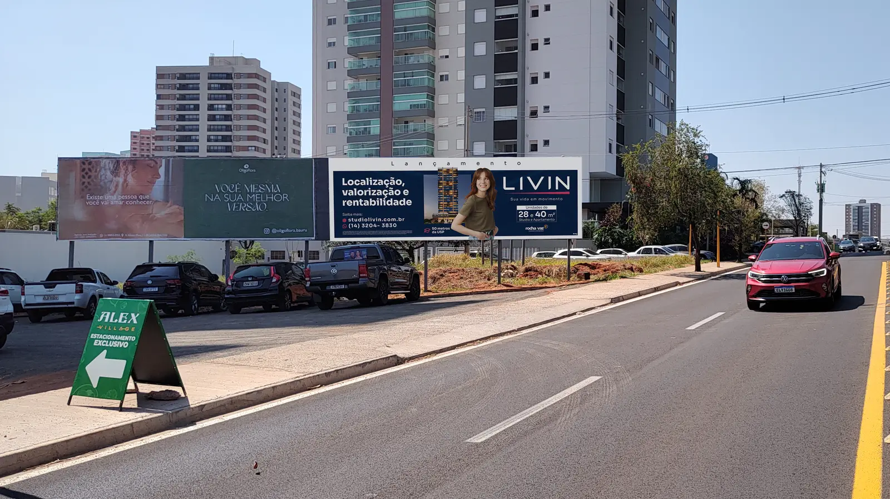
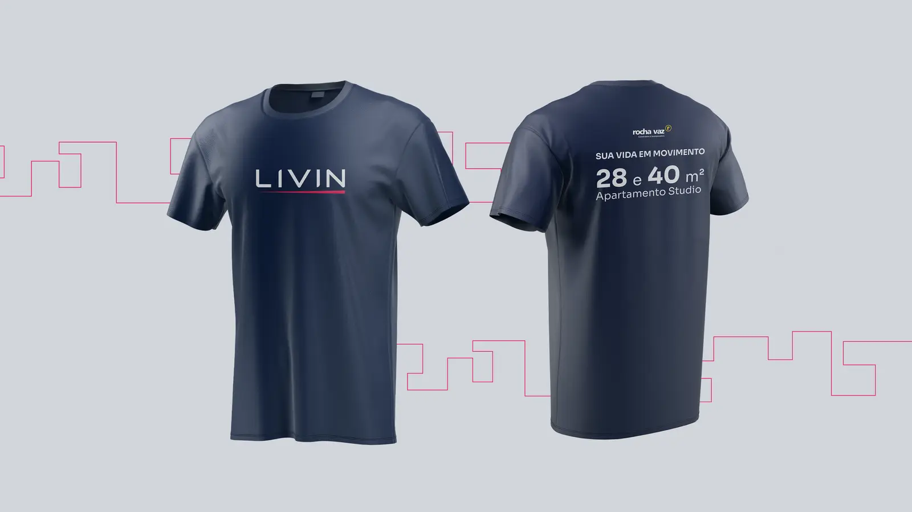
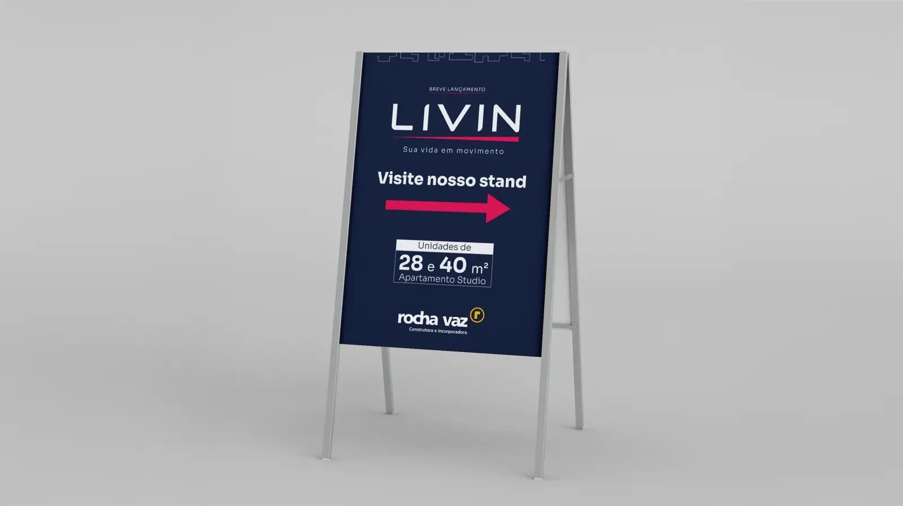
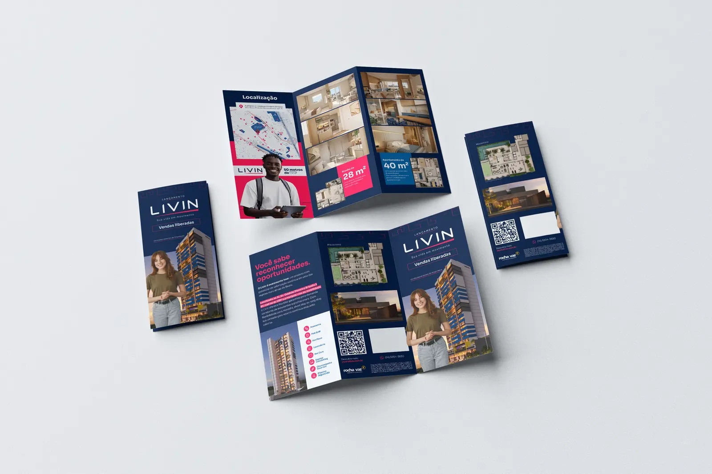
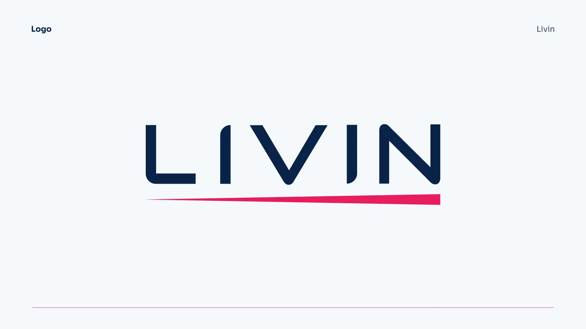
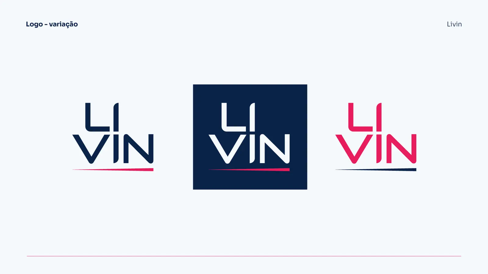
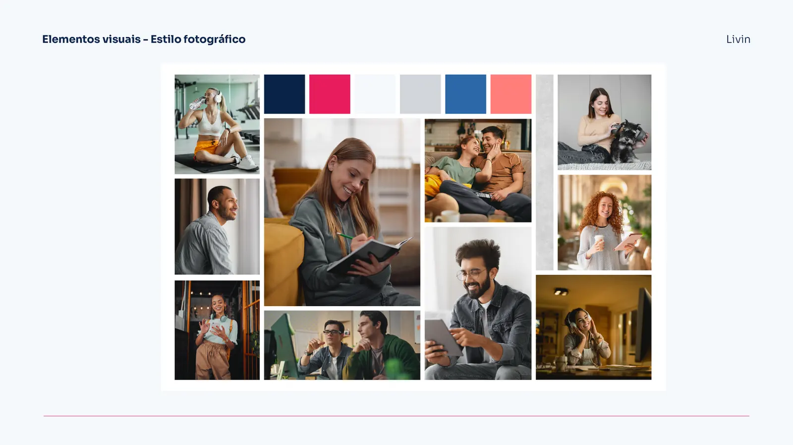

Lançamento imobiliário
Livin

A cidade não para e você também não. O LIVIN nasce para acompanhar quem vive o agora, com liberdade e leveza. Com studios de 28 m² e 40 m², cada detalhe foi pensado para se adaptar ao ritmo, sem abrir mão do essencial.
Mais que um endereço, o LIVIN é um estilo de vida urbano, conectado e versátil. A poucos passos de universidades como USP e FACOP, com fácil acesso a shoppings, supermercados e tudo o que importa no dia a dia.
Coworking, academia, espaço influencer, pub e piscina: áreas comuns que funcionam como extensões da casa. No LIVIN, tudo se encaixa porque viver bem é ter um espaço que acompanha você.










